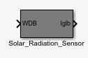
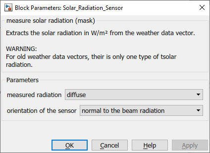

Solar Radiation Sensor
Path: CARNOT/Control
Purpose
Measurement sensor for solar radiation.
Description
The block extracts the solar radiation in [W/2] from the
weather data
bus (WDB). Direct, diffuse or
global radiation may be measured.
The data in the WDB defines wether the global, direct or
diffuse radiation are on a horizontal or inclided surface.
Typically weather data sets contain radiation on a horizontal surface. Use the
Radiation_on_Inclined_Surface
block (in Carnot/Weather) to calculate the radiation on an inclined surface and
modify the radiation in WDB.
Note: The former Carnot weather data format doesn't contain the nomal beam radiation. Use convert_weather.m to change the format of the data.
Parameters and Dialog Box

Characteristics
Direct Feedthrough Yes
Sample time
Inherited
from driving block
Vectorized
No